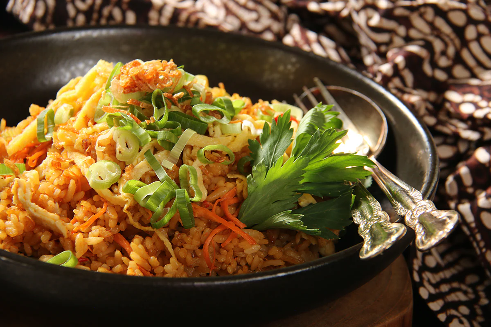

Indonesian Culinary
Our menu are dedicated to satisfying the adventurous palates of urban
Indonesians, inviting them to embark on a limitless journey through
the diverse tapestry of local culinary traditions. Our brands embody
the true essence of Nusantara flavors, extending from mouthwatering
dishes and refreshing beverages to an exquisite selection of sauces
and sambals.
Gudeg
Traditional Javanese dish, a sweet and savory jackfruit stew
slow-cooked with coconut milk, palm sugar, and spices.

Nasi Goreng
Prepared with aromatic spices, sweet soy sauce, a mix of
vegetables, chicken, and a fried egg on top.
Es Blewah
Chilled drink by blending cantaloupe with ice and sweet syrup,
creating a cool and sweet treat.
Ayam Bakar
Grilled chicken dish, marinated with a blend of sweet soy sauce,
aromatic spices, and herbs.
Cendol
Consists of green jelly-like strands made from rice flour, often
flavored with pandan leaves, and served in sweetened coconut milk
with palm sugar.